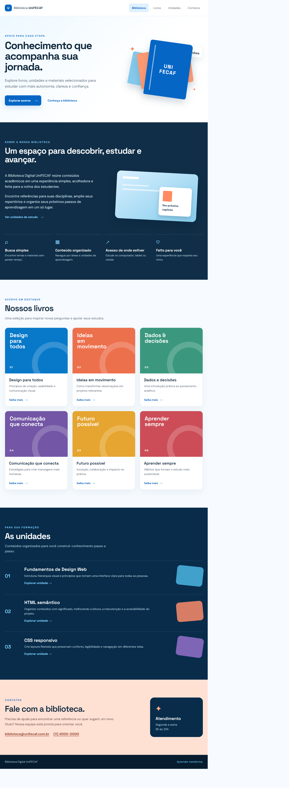
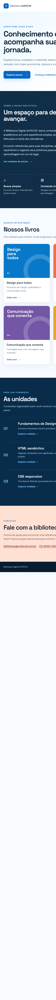

Relatório de análise, decisões visuais e implementação de uma interface web moderna, responsiva e acessível.
A UniFECAF precisa de uma primeira interface para sua biblioteca digital. O desafio não é apenas exibir livros: é criar um ponto de entrada claro para estudantes que buscam referências, materiais de apoio e informações sobre as unidades de aprendizagem.
O protótipo de baixa fidelidade apresenta uma sequência vertical composta por navegação superior, área inicial com destaque visual, apresentação da biblioteca, grade de livros, seção de unidades e contatos. A solução preserva essa organização e converte os blocos neutros em componentes com hierarquia, contraste e conteúdo realista.
A interface final usa uma estrutura de página única com âncoras, permitindo que o aluno vá diretamente ao acervo, às unidades ou ao contato. A página também usa títulos curtos, parágrafos objetivos, cards repetíveis e chamadas para ação consistentes.
O público principal é formado por estudantes da UniFECAF, especialmente aqueles que acessam materiais em intervalos curtos e alternam entre notebook e smartphone. O público precisa localizar informação rapidamente, compreender o que está disponível e seguir um caminho de estudo sem esforço visual.
| Necessidade | Resposta na interface |
|---|---|
| Encontrar materiais com rapidez | Navegação por âncoras, títulos objetivos e cards com ação visível. |
| Estudar em diferentes contextos | Layout fluido e reorganização para uma coluna em telas pequenas. |
| Entender a proposta da biblioteca | Hero com mensagem principal e seção “Sobre” com benefícios concretos. |
A paleta parte do azul associado à identidade visual institucional e combina um azul-marinho para profundidade, tons claros para áreas de respiro e coral para destaque. O resultado cria contraste suficiente entre texto e fundo e evita que a interface fique visualmente monótona.
Space Grotesk foi escolhida para títulos por sua personalidade contemporânea e boa presença em tamanhos grandes. DM Sans foi usada no corpo por ser neutra, legível e confortável em parágrafos e pequenos rótulos.
O hero utiliza uma mensagem orientada ao benefício (“Conhecimento que acompanha sua jornada”) e dois caminhos: explorar o acervo ou conhecer a biblioteca. As capas coloridas dos livros transformam o conteúdo em pontos de reconhecimento visual. A seção de unidades adota numeração e separadores para transmitir progressão. Já o bloco de contatos usa coral para sugerir proximidade e disponibilidade.
O visual também evita excesso de elementos decorativos: os grafismos existem para apoiar a leitura, enquanto a informação é sempre apresentada em texto HTML, com links e headings reais.
| Seção | Função | Componente principal |
|---|---|---|
| Biblioteca | Apresentar valor e orientar o primeiro clique. | Hero, CTA e ilustração de livros. |
| Sobre | Explicar a proposta e os benefícios. | Texto, visual de apoio e quatro benefícios. |
| Livros | Exibir o acervo em destaque. | Grid de seis cards com capas e ação. |
| Unidades | Organizar o conteúdo formativo. | Lista numerada com descrição e link. |
| Contatos | Oferecer ajuda e canal de comunicação. | Bloco de contato e horários. |
O layout foi construído com CSS Grid, Flexbox, unidades relativas e três faixas de comportamento. Em telas amplas, os livros ocupam três colunas; em tablets, duas; em smartphones, uma. O hero passa de duas colunas para uma, e a arte é reduzida para não competir com o conteúdo.
clamp().A implementação usa landmarks semânticos como header, nav, main, section e footer. Há um único h1, headings em sequência, link “Ir para o conteúdo principal”, foco visível, textos alternativos para elementos com função informativa e links com rótulos compreensíveis. Os contrastes foram escolhidos para manter legibilidade e os elementos de ação possuem áreas de toque generosas.
Como transformar um protótipo de baixa fidelidade em uma interface web moderna, responsiva e alinhada à identidade visual da UniFECAF?
A transformação acontece em quatro decisões conectadas: primeiro, interpretar a intenção e a ordem das seções; depois, definir uma linguagem visual baseada em cor, tipografia e espaçamento; em seguida, converter a organização em HTML semântico e componentes CSS reutilizáveis; por fim, testar os comportamentos em diferentes larguras e revisar acessibilidade. Assim, o resultado não é uma cópia literal do protótipo, mas uma evolução funcional que preserva sua arquitetura e resolve suas lacunas.


O projeto foi separado conforme solicitado no enunciado:
biblioteca-unifecaf/ ├── index.html ├── css/ │ └── style.css ├── assets/ │ └── imagens/ └── README.md
O site utiliza exclusivamente HTML e CSS no desenvolvimento da interface, sem framework e sem construtor visual.